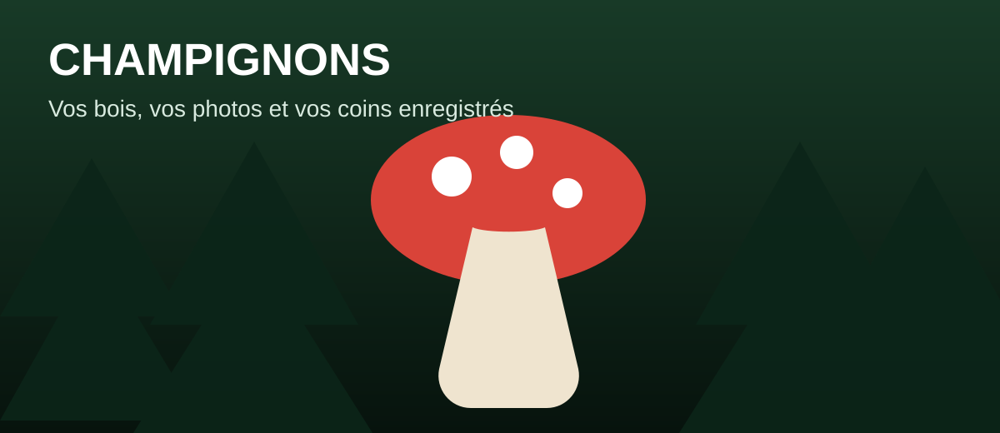

🍄 Champignons
Vos bois, vos photos et vos coins enregistrés.
⚠️ La reconnaissance par photo peut se tromper. Elle ne permet jamais de conclure qu’un champignon est comestible.
Que voulez-vous faire ?
Ajouter un bois
1. Localiser le bois
Une fois dans le bois, appuyez sur le bouton pour enregistrer sa position. Aucune adresse ne sera affichée.
Appuyez sur « Localiser le bois ».
2. Photo du champignon
Prenez la photo du champignon non cueilli, encore en terre. Le GPS de la photo doit correspondre au GPS du bois.
Localisez d’abord le bois : ce bouton deviendra bleu.
3. Reconnaissance du champignon
Analyse…
Catégorie du bois
L’IA ajoute le champignon reconnu. S’il y a plusieurs variétés dans ce bois, ajoutez-les aussi : tapez une virgule puis 1 ou 2 lettres et touchez la proposition.
🌲 Retourner dans le bois
Bois enregistrés
Tri automatique : du plus près au plus loin par rapport à « Retourner sur la place ».
🔒 L’adresse exacte n’est pas affichée. La ville et la distance sont visibles ; le GPS exact n’est utilisé que pour « Aller à ce bois » ou si vous choisissez de le partager avec un ami.
Chargement des bois du plus près au plus loin…